| Model 1 | Model 2 | Model 3 | |
|---|---|---|---|
| Years of Service | 779.57 *** | 747.61 *** | |
| (110.42) | (111.40) | ||
| Sex (0 = F; 1 = M) | 14088.01 ** | 9071.80 | |
| (5064.58) | (4861.64) | ||
| N | 397 | 397 | 397 |
| R2 | 0.11 | 0.02 | 0.12 |
| *** p < 0.001; ** p < 0.01; * p < 0.05. | |||
Check-In : MR. NHST Review
Table 1. Predicting Salaries from Years of Service and Sex.
Salaries Dataset. “The 2008-09 nine-month academic salary for Assistant Professors, Associate Professors and Professors in a college in the U.S. The data were collected as part of the on-going effort of the college’s administration to monitor salary differences between male and female faculty members.”
- salary : the salary of the professor, in cold, hard, US American Dollars.
- yrs.service : the years of service the professor had at the college.
- sex : whether the professor was Male or FemaleGraph of Model 1
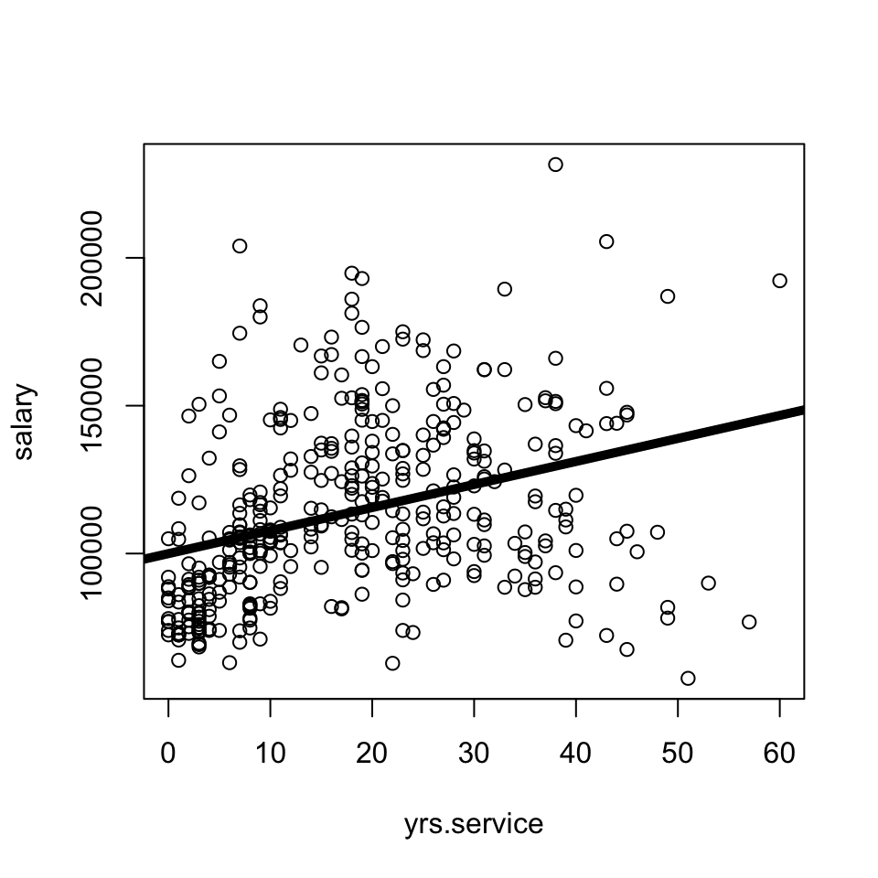
Diagnostic Plots
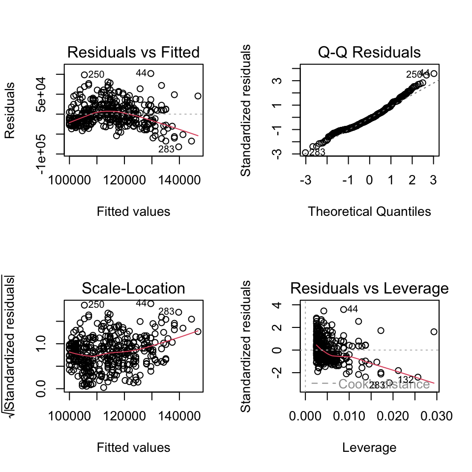
Graph of Model 2
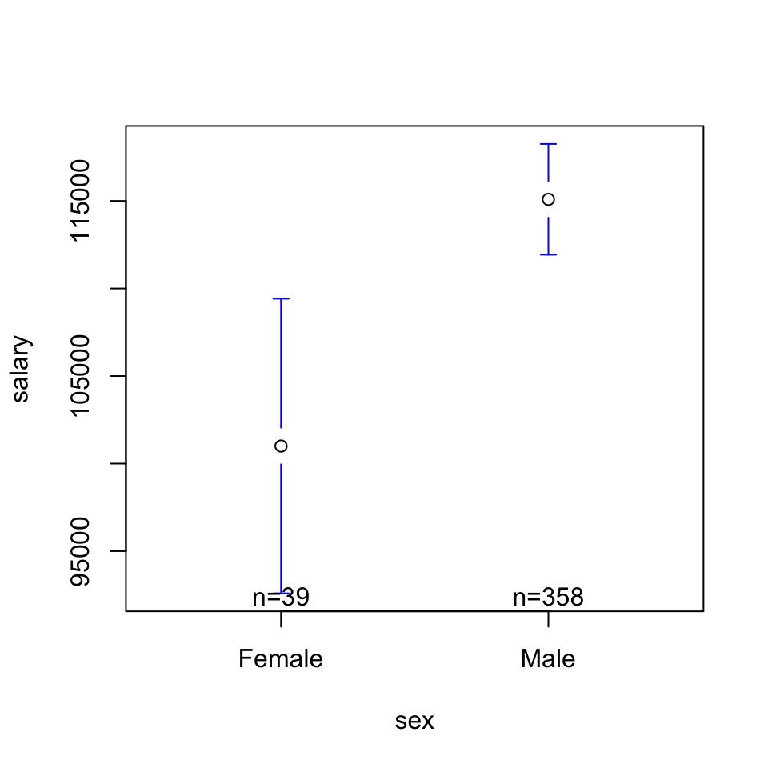
Diagnostic Plots
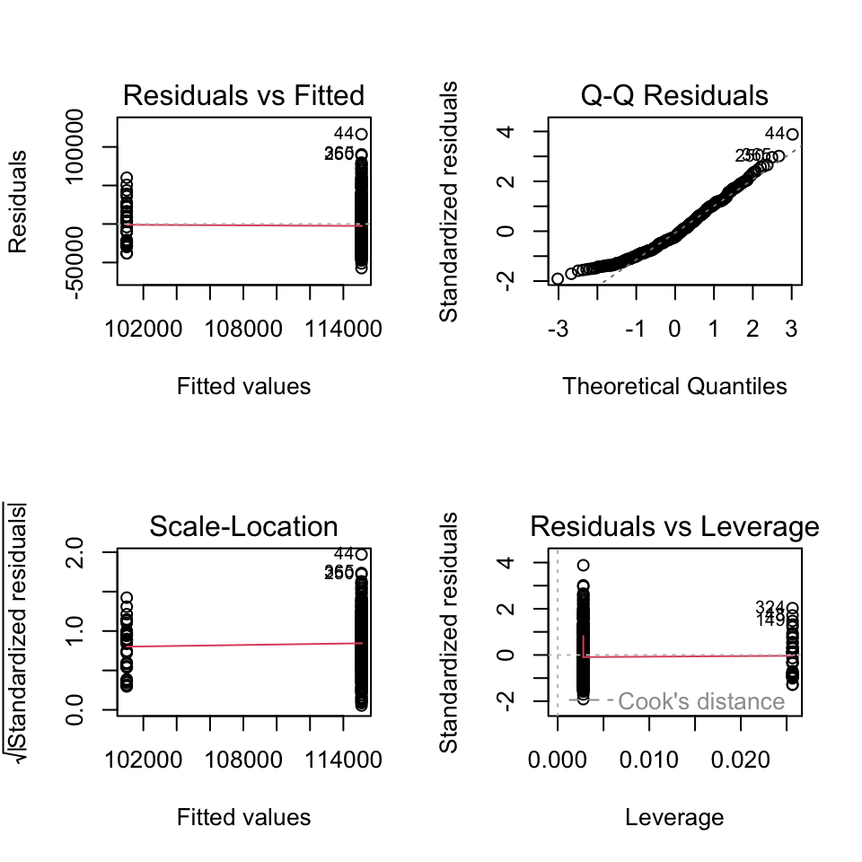
Diagnostic Plots
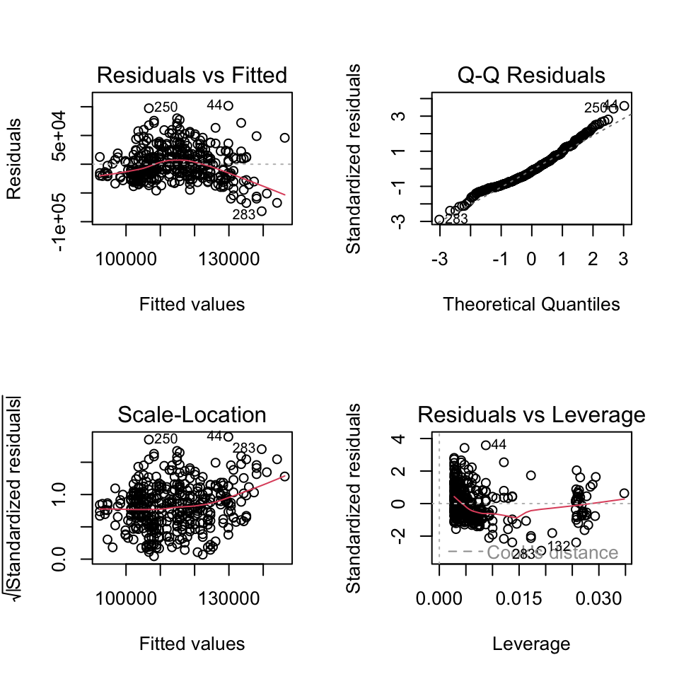
RECAP : Adding a Quadratic Effect to Address issues of Heteroscedasticity
mod3b <- lm(salary ~ yrs.service + I(yrs.service^2) + sex, data = Salaries)
export_summs(mod3, mod3b,model.names = c("Without Quad", "With Quad"))| Without Quad | With Quad | |
|---|---|---|
| (Intercept) | 92356.95 *** | 77227.50 *** |
| (4740.19) | (4929.33) | |
| yrs.service | 747.61 *** | 2984.38 *** |
| (111.40) | (327.46) | |
| sexMale | 9071.80 | 9392.25 * |
| (4861.64) | (4574.88) | |
| I(yrs.service^2) | -51.27 *** | |
| (7.11) | ||
| N | 397 | 397 |
| R2 | 0.12 | 0.22 |
| *** p < 0.001; ** p < 0.01; * p < 0.05. | ||
Original Model
par(mfrow = c(2,2))
plot(mod3)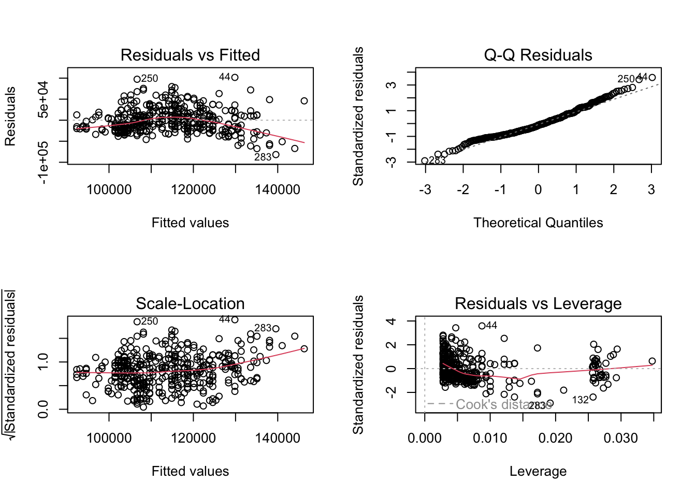
Model With Quadratic Term
par(mfrow = c(2,2))
plot(mod3b)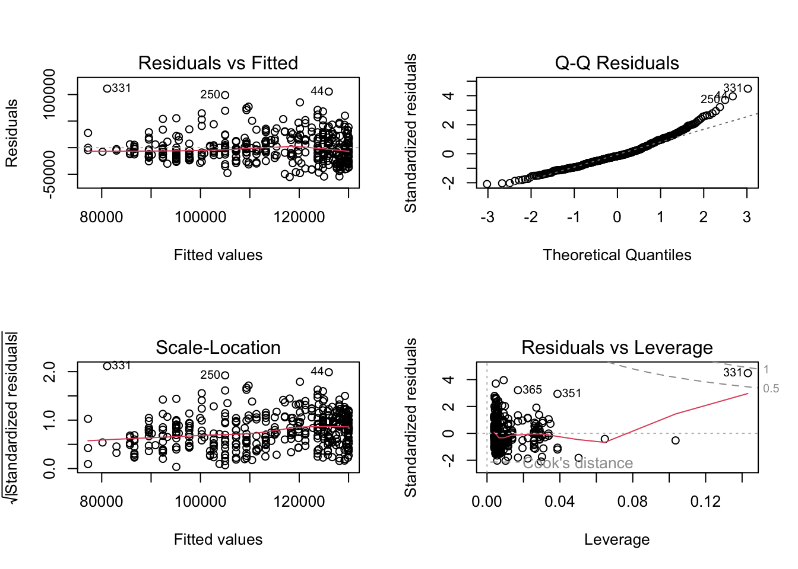
BREAK TIME CHECK-IN
We are going to collect some more data for an activity in section.
Please do this on your own; no looking up answers on Google / phoning a friend / talking to your buddy / ChatGPT.
Thanks!
COMMERCIAL BREAK : looking over Lab 4 (& discussing the results)
Part 2 : Experiments
Why did google change???
DEFINITION : Causality
- The cause and effect are contiguous in space and time.
- The cause must be prior to the effect.
- There must be a constant union betwixt the cause and effect. (“Tis chiefly this quality, that constitutes the relation.”)
- The same cause always produces the same effect, and the same effect never arises but from the same cause.
DISCUSS :
Which parts of this definition rule out the other reasons for a pattern in the data??
Apply this definition to a true causal relationship. Does it hold up?DEFINITION : Principles of an Experiment
dependent variable. what the researchers want to predict or explain
experimental manipulation. change only one thing about the variable
extraneous variables as “noise”. other factors that might influence the outcome variable
random assignment. the group people are put in is random; this ensures that all other variables that might affect the result are evenly split across the two groups
placebo effects. when individuals in the study change their behavior if they expect something to have an effect
external validity. how much does the experimental manipulation represent what someone might experience in real life?
construct validity. how much does the manipulation actually change the variable of interest?
experimenter expectancy effects. if experimenters know what will happen to participants, they may change their behavior in ways that affect the results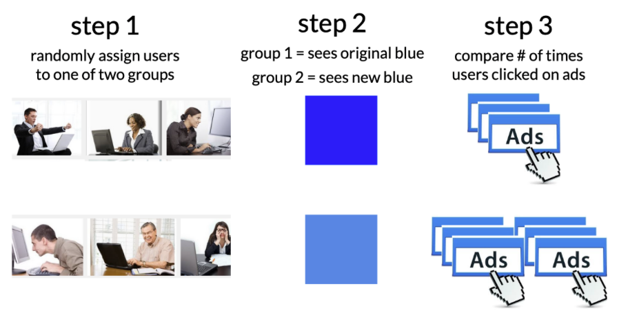
KEY IDEA : Watch out for Misleading Control Variables
RECAP : the manipulation (A/B Testing) : researchers create multiple groups (conditions) and change ONE THING (the IV) about a person’s experience in each group & observe the result (the DV).
KEY IDEA : the comparison group matters!
a 2 hour stats class DECREASES boredom compared to…
a 2 hour stats class INCREASES boredom compared to…
Science is Hard : Power Posing
What is the experimental / control condotion?
Is this a fair comparison / manipulation?
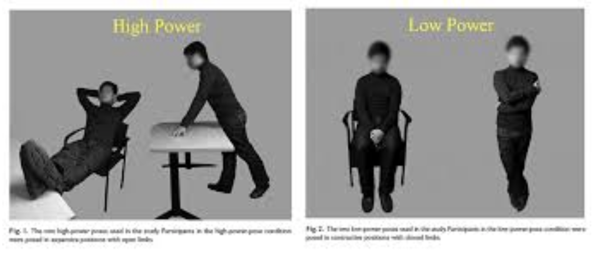
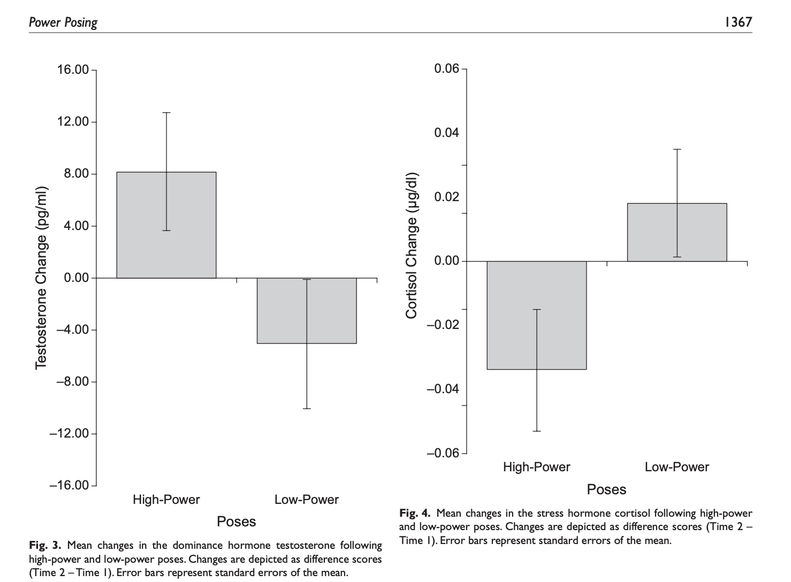
Example : Gratitude Study
Read the prompt below. Answer the following questions.
- ICE-BREAKER : What’s something that you are grateful for?
- What is the experimental / control condition?
- Is this a fair comparison / manipulation? What would be better?
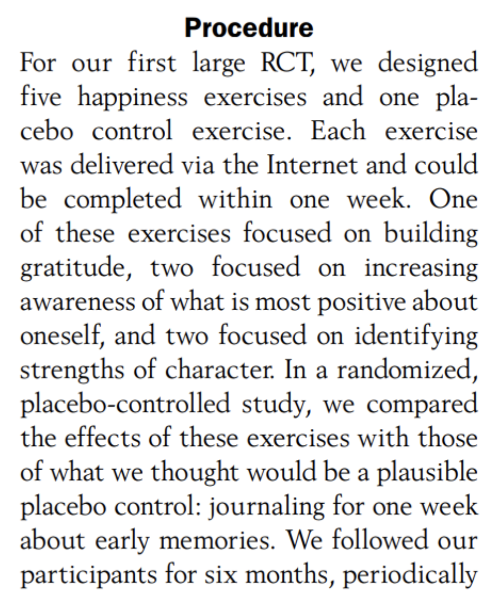
Example : Dehumanization Study
The Measures
The Manipulation
Anchoring : Question –> Theory –> Data
Question : Will the number that people see BEFORE making their own rating influence their decision?
Theory :
- OPTION A: People who see a HIGHER number before making their own rating will make a HIGHER number than people who see the LOWER number.
- OPTION B : People who see a LOWER number before making their own rating will make a HIGHER number than people who see the HIGHER number.
- OPTION C : There will be NO DIFFERENCES between the groups.